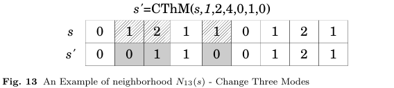

The neighborhood purpose is also to change execution modes, in this case are changed three modes m1, m2 and m3, corresponding to three jobs j1, j2 and j3. But due to the high combinations number, will be chosen only three jobs that have precedence relationship between each other. Similarly, this neighborhood verifies if the changes being made are valid or not in relation to non-renewable resources.
To perform this process, it is necessary to receive as a parameter a vector M of execution modes for all jobs, the jobs j1 → j2 → j3 and the new modes m1, m2 and m3.
Figure 13 shows the movement made by this neighborhood. In this example, the method receives as parameter jobs 1, 2, 4 and the new modes 0, 1, 0. Thus, the current execution modes 1, 2, 1 of these jobs are changed to 0, 1, 0.
